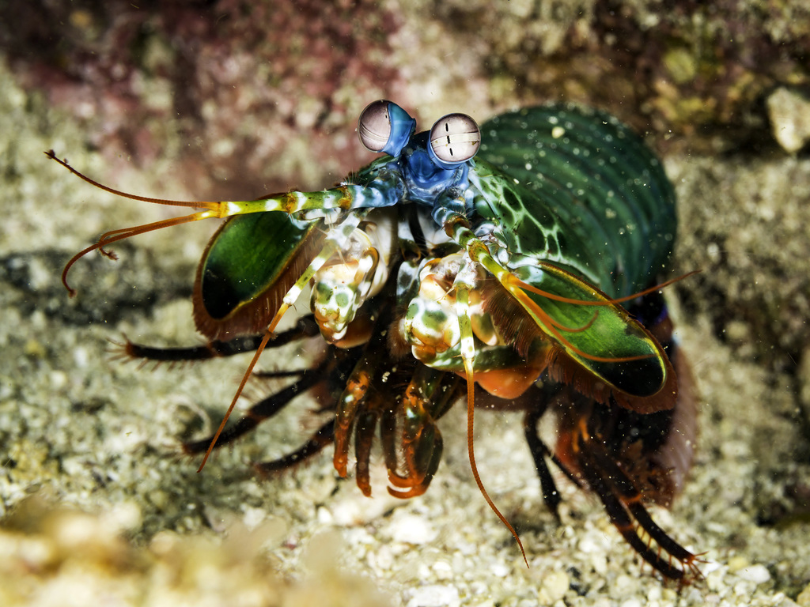
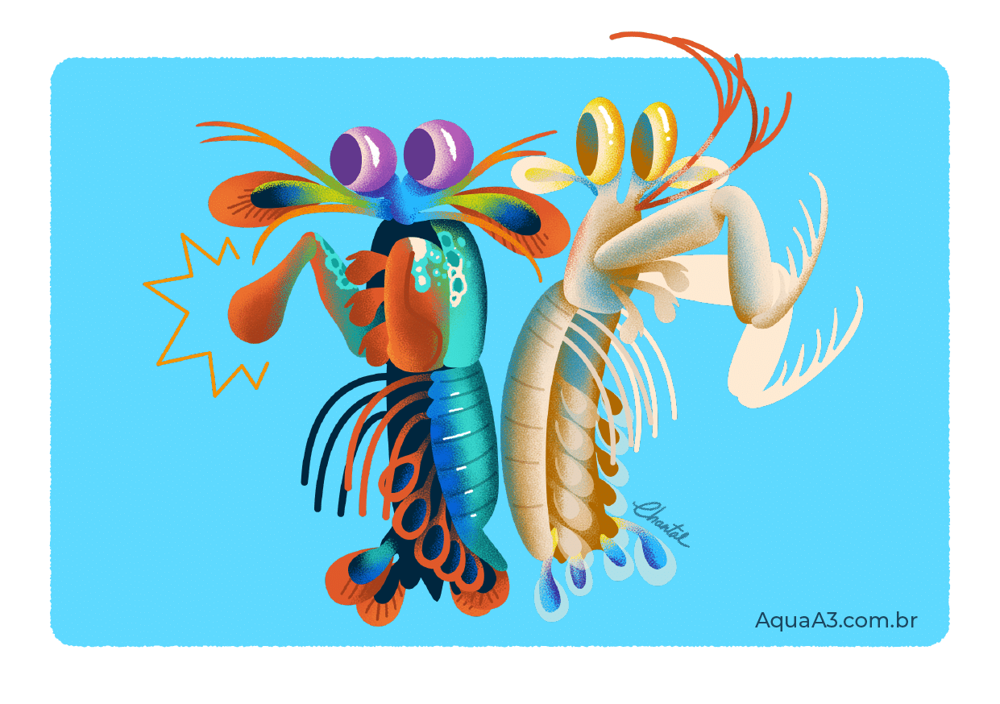
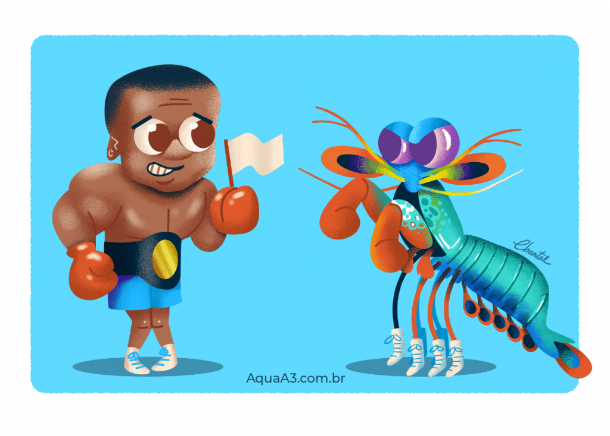
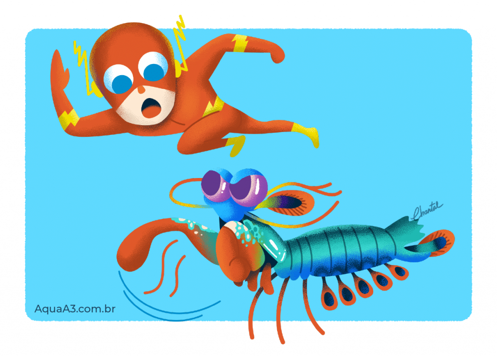

Fatos sobre o Stomatopoda
Informações gerais desse bicho doido

Stomatopoda (ou estomatópode), chamados popularmente de tamarutacas ou de lacraias-do-mar no Brasil, é uma ordem de crustáceos marinhos da subclasse Hoplocarida, que agrupa cerca de 400 espécies, caracterizadas principalmente pela morfologia da segunda pata torácica, que é modificada em apêndice subquelado, lembrando uma pata de louva-a-deus.[1]
Classificação científica
[2]Nome científico: Odontodactylus scyllarus
| Reino: | Animalia |
|---|---|
| Filo: | Arthropoda |
| Subfilo: | Crustacea |
| Classe: | Malacostraca |
| Subclasse: | Hoplocarida |
| Ordem: | Stomatopoda (Latreille, 1817) |
O Stomatopoda é um perfurador e esmagador!

Devido a uma diferença anatômica de seus apêndices, ele pode ser classificado em dois grupos: os que têm ataque perfurador (spearers) e esmagador (smashers). Com isso, os Stomatopodas são considerados um dos animais mais fortes e velozes do planeta, por terem um ataque rápido como uma bala e forte como um touro.[3]
O animal "mais forte" do mundo!

O Stomatopoda possui dois apêndices bem desenvolvidos (semelhantes a um martelo), chamados de Porretes de Dáctilo. Com essas "super patas" o animal espanca e esmaga suas presas em uma intensidade de aproximadamente 60 kg/cm² (daí o motivo de um de seus nomes ser lagosta-boxeadora).[3]
O animal mais rápido no gatilho

Além da enorme potência de seu soco, esse animal consegue movimentar seus apêndices tal qual um tiro de arma de fogo: seu golpe pode chegar a uma velocidade de 720 km/h. Curiosamente, tanto a força quanto rapidez do ataque, não danificam sua estrutura corporal.[3]
Referências bibliográficas
1. Infopédia, Dicionário de Língua Portuguesa da Porto Editora. «Estomatópode» Consultado em 03 de novembro de 2021.
2. Wikipedia, A enciclopédia livre. «Stomatopoda» Consultado em 03 de novembro de 2021.
3. Acquaa3, aquarismo & natureza. «Conheça os 5 superpoderes do camarão mantis» Consultado em 03 de novembro de 2021.